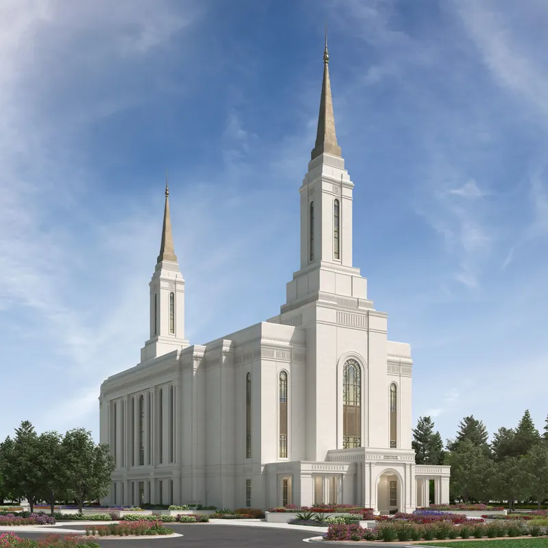
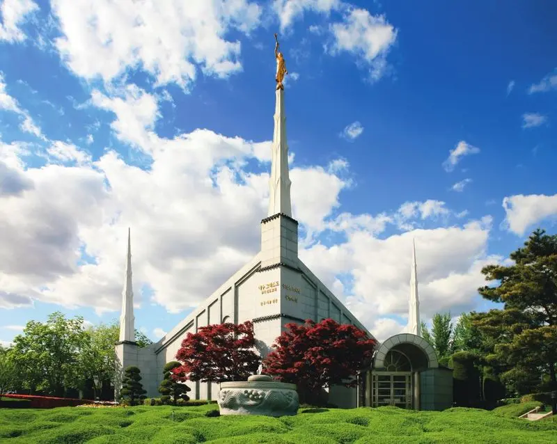

Temple Album
☰
Home
Old
New
Large
Small
Temple Gallery
Temple of nigeria
Aba
Temple of Kinshasa
Kinshasa
Temple of kona
Hawai
Temple of Kyuv
Ukraine

Temple of Lindon
Utah-Usa
Temple of Saratoga
Uta-Usa
Temple of Seattle
Washington-Usa

Temple of Seoul
Korea
Temple of Vernal
Utah-Usa